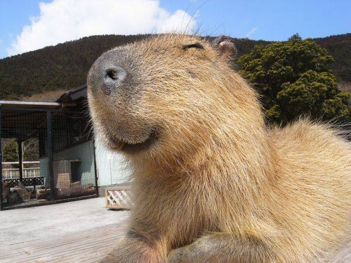

Капибара - самый большой грызун на земле
Капибара (лат. Hydrochoerus hydrochaeris) — крупнейший представитель отряда грызунов, встречающийся в природе в Южной и Центральной Америке.
Местообитание
Капибары живут в тропических регионах Западной и Южной Америки, где обитают вблизи воды. Они предпочитают жить в зарослях растительности у водоёмов (рек, озёр, болот) и атоллов.
| Научное название | Местообитание | Размер |
|---|---|---|
| Hydrochoerus hydrochaeris | Южная и Центральная Америка | Длина тела: 1,1 - 1,3 м, вес: 35 - 66 кг |
Интересные факты о капибарах
- Капибары обладают редкой способностью погружаться под воду и задерживать дыхание на несколько минут.
- Они отлично следят за своими детенышами и переносят их на себе, когда те маленькие.
- Капибары имеют брюхоногие конечности, что позволяет им отлично плавать.